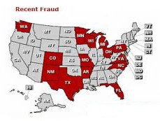
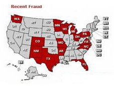
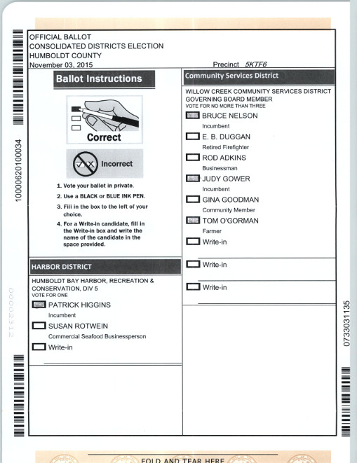

Citizens throughout the US are concerned about the legitimacy of machine vote counts. Voting systems that do not provide a paper audit trail require that citizens trust the company that has provided the voting system. Voting systems such as that used in Humboldt County, CA, which use optically scanned paper ballots, do leave an audit trail of all cast ballots.
Our Project aims to provide images of each counted ballot, so that any person or organization wishing to do an independent count will have access to a complete set of ballot images

 

|  |